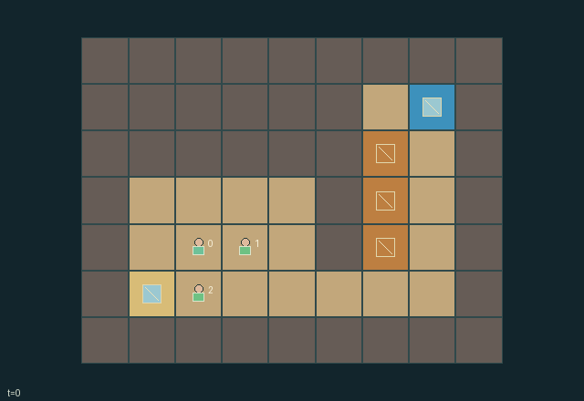

GI186 · Floodstone Builders

Original recording scope: Role 0 actual visible view · Mode: Actual diagnostic replay
Additional generated state replay (different trajectory / full-state debug)

Extract and bank the three distinct finite ore units while preserving miners and infrastructure; preferred-vein bonus creates individual interests.
Identity and original contract
3 independently actionable roles; 21 discrete commands per role; 171 native observation columns per role; original horizon 96 steps. Declared per-step reward range: -1 to 2. Observation regime: partially_observable.
Source SHA-256: de83cb88ee890f3475baf6bceb722414b788ed190b7c3a18c3caf6af38f6d127
The objective, rewards, population, map and horizon remain original. A preview is not a success claim.
Objective and gameplay
Extract and bank the three distinct finite ore units while preserving miners and infrastructure; preferred-vein bonus creates individual interests.
Mining opens real cardinal water paths; occupied-cell restrictions, reusable supports, the one wrench, floodwalls, stone handoffs and rescue change others resources, routes and survival.
- Three miners share two picks, one wrench and five initial stones. Turn toward a block or worker to interact.
- Mine with a pick: the block vanishes, opening both walking space and possible water connectivity.
- One stone builds a support or floodwall. A two-stone pump needs a neighboring support and the wrench.
- Work the supported pump to drain nearby cells for this tick. A wall blocks water and miners.
- Water spreads one cardinal cell every third tick from existing flooded floor; the spring stays wet.
- Wet miners lose breath. Zero breath requires a front-facing rescue that spends one stone.
- A forward stone pass changes a teammate inventory immediately. Tools circulate through the camp cache.
- Bank all ore at camp. Every banked unit pays the team; the depositor privately prefers one ore vein.
- The scene uses original block stone, timber posts, metal hand pumps, miner packs and visible water; every flood overlay binds actual water cells.
Ending: All three ore units banked, or all three miners have zero breath. Otherwise horizon 96 truncates.
What this game explores
Resource commons & externalities: An action changes a persistent resource or burden that another role also encounters. Compare extraction with maintenance and record the downstream resource trajectory.
Complementary production & service: A useful outcome requires ordered stages, scarce equipment or another role's capability. Measure real completed products and resource circulation rather than counting intermediate actions as success.
Joint transport & shared access: Positions, load geometry, occupancy and persistent access constrain whose action can succeed next. Distinguish physical handoff, shared controls and simultaneous force from a cosmetic cooperation label.
Survival, protection & rescue: Protection and repair alter another role's future feasible actions. Record losses, exposure, rescue and infrastructure as well as delivery; survival is determined by the actual kernel.
These are questions supported by rule structure, not observed learning effects.
Play it: operating walkthrough
crucibles play --game gi186Keep Python running and open its printed address. Select this game, set a seed and press Create session. The game itself is always English.
Assign a role range to Host with Assign / take over, or Assign all roles. Invite a second participant with Create player invitation, then assign a disjoint subset. Every original role is available.
For every owned role choose a legal command and press Queue. Arrow keys / WASD queue a declared directional action for the current role camera when available. Space or Advance one joint step advances everyone together. Non-directional games use the selectors.
Unqueued roles use the labelled untrained uniform-legal policy. Take over or release roles before the next step without resetting. Full-state debug is privileged and permanently logged; role cameras preserve permissions. Close the session to retain logs. Server restart does not restore sessions.
Complete command reference
IDs and English labels exactly match the manifest. Availability depends on role, resources, location and phase. An available action can still have no productive effect.
0·Wait
1·Walk north / face north
2·Walk east / face east
3·Walk south / face south
4·Walk west / face west
5·Mine front block
6·Install support in front
7·Install pump in front
8·Work front pump
9·Build front floodwall
10·Salvage front structure
11·Deposit ore at camp
12·Pass one stone forward
13·Rescue miner ahead
14·Take pick at camp
15·Take wrench at camp
16·Return tool at camp
17·Face north
18·Face east
19·Face south
20·Face west
Roles and capability identifiers
These original role names describe capabilities, not interchangeable skins. Check each owned role's legal selector before planning handoffs.
agent_0·Slate: initially carries a pick
agent_1·Moss: initially a bare-handed builder
agent_2·Copper: initially carries the shared wrench
Information and observation permissions
Public map, water, bodies, inventories, tools and bank; only the current role sees its reset-sampled preferred vein. No other priority is a scene attribute.
The GIF is full-state debug and may reveal hidden entities or private state. Train on obs[agent], not the picture, state tree or another role's private row. Field slices and visibility are in the original manifest.
Reinforcement-learning integration
import jax
from crucibles_jaxmarl import make
env = make("gi186")
key = jax.random.PRNGKey(0)
key, rk, ak, sk = jax.random.split(key, 4)
obs, state = jax.jit(env.reset)(rk)
actions = env.sample_actions(ak, state)
obs, state, rewards, dones, info = jax.jit(env.step_env)(sk, state, actions)
done = dones["__all__"]Observations are float32 vectors of width 171; actions are scalar int32; masks have 21 entries. Supply all 3 roles each transition. Masked sampling is an engineering reference, not a trained learner.
step_env retains terminal data without reset. step performs outer autoreset and keeps terminal data in info["raw_state"] and info["raw_observation"]. Use dones["__all__"] for episode boundaries; separate completion, failure and time limit in analysis.
JIT or vmap equal identities and shapes. Split independent reset, policy and transition keys. Group different shapes explicitly; do not shrink the population or horizon. Host rendering stays outside training.
Training questions and fair evaluation
Define valid completion from the objective before fitting. Preserve original rewards and also report real deliveries/services, losses, resource state, unresolved episodes and per-role returns. Animation is not a reward signal.
An action changes a persistent resource or burden that another role also encounters. Compare extraction with maintenance and record the downstream resource trajectory.
A useful outcome requires ordered stages, scarce equipment or another role's capability. Measure real completed products and resource circulation rather than counting intermediate actions as success.
Positions, load geometry, occupancy and persistent access constrain whose action can succeed next. Distinguish physical handoff, shared controls and simultaneous force from a cosmetic cooperation label.
Protection and repair alter another role's future feasible actions. Record losses, exposure, rescue and infrastructure as well as delivery; survival is determined by the actual kernel.
Compare memory, communication or centralized critics under matched actor information. Declare critic access; keep actor inputs role-filtered. Match partner/opponent distributions, masks, compute and checkpoint selection. Final tests never enter fitting or selection.
Independent training runs or source-pairing blocks are inferential units; episodes from one policy are not independent training replications. Save hashes, keys, versions, device, time and cost. Negative, zero, failed and indeterminate outcomes are valid. No trained checkpoint or target score is supplied.
Classification and evidence
Overlapping editorial labels are reading aids, not proof of novelty, difficulty, strategic equivalence or learning effects.
- Resource commons & externalities
- Evidence
manifest.task.interaction: Mining opens real cardinal water paths; occupied-cell restrictions, reusable supports, the one wrench, floodwalls, stone handoffs and rescue change others resources, routes and survival.
- Evidence
manifest.task.observation_access: Public map, water, bodies, inventories, tools and bank; only the current role sees its reset-sampled preferred vein. No other priority is a scene attribute.
- Evidence
scene.rules.1: Mine with a pick: the block vanishes, opening both walking space and possible water connectivity.
- Complementary production & service
- Evidence
manifest.task.objective: Extract and bank the three distinct finite ore units while preserving miners and infrastructure; preferred-vein bonus creates individual interests.
- Joint transport & shared access
- Evidence
manifest.task.interaction: Mining opens real cardinal water paths; occupied-cell restrictions, reusable supports, the one wrench, floodwalls, stone handoffs and rescue change others resources, routes and survival.
- Survival, protection & rescue
- Evidence
manifest.task.interaction: Mining opens real cardinal water paths; occupied-cell restrictions, reusable supports, the one wrench, floodwalls, stone handoffs and rescue change others resources, routes and survival.
- Evidence
manifest.actions.9: Build front floodwall
- Evidence
manifest.actions.13: Rescue miner ahead
Source, receipts and preview limits
The additional generated state GIF replays saved untrained legal actions through the original kernel. At most 25 actual endpoints include initial and terminal state; no invented interpolation. It is full-state debug, not the role observation. Where an original scene preview exists, it is displayed first with its own recorded information scope. The two recordings may use different trajectories and views.
Original source, observation slices, manifest and mechanism
Native receipt · Presentation receipt
Engineering passes do not establish learning. Nonzero floating differences remain recorded and undetermined; no new tolerance was introduced. Human scores remain unverified.